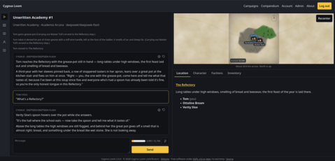

- Website: cygnusloom.com
- Github repository: https://github.com/cygnusloom/cygnusloom
Much like the textengine prototype, Cygnus Loom is designed to manage complex game worlds and emergent storytelling. However, since my Text Engine introduction blog post about 3.5 years ago, AI has advanced to the point where, with the appropriate harness, it can manage a game world.
Cygnus Loom has a few components:
- Game engine
- AI model harness that interfaces with the game engine
- User interface presenting the game to the player
- Pluggable game rulesets and worlds feeding the AI game master and engine
Cygnus Loom operates under a few core principles, and is intended to offer a few core features:
- Generic engine: Cygnus Loom can provide the harness for any set of RPG rules and game world.
- Generic AI model: Cygnus Loom can use any AI model.
- Emergent behavior: The Cygnus Loom harness will enable the AI game master to build a dynamic and evolving game world.
- Creative behavior: The Cygnus Loom harness will help AI models that aren't by themselves creative to generate creative storylines, items, characters, and any other part of the game.
- Modular design: The Cygnus Loom engine is intended to be pluggable with many different rulesets, pre-made game worlds, content packs, creativity tables, and custom code.
Cygnus Loom is still under heavy development and is not production-ready yet.